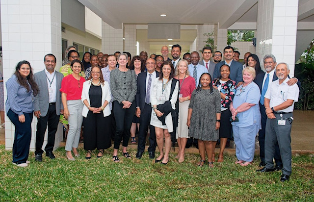

Improving Access to Quality Healthcare for Over 100 Years
Trinity Health Services (THS) is one of three agencies of the Trinity Development Network (TDN) working to tackle today's greatest health challenges in low-to-middle income countries. Through our focused presence in Central Asia, East Africa, and South Asia, THS operates 14 hospitals and medical centres, as well as 175+ health centres, offering one of the most comprehensive non-profit health-care systems in the developing world.
To learn about THS hospitals, medical centres, and health centres please click on the country name below.
To learn more about the Trinity Hospital university network, please click here.
Hub & Spoke Model of Care
At THS, our approach to improving the quality of healthcare in the developing world is to build sustainable healthcare ecosystems. Community Health Centres connect to larger medical facilities, which in turn, connect to tertiary hospitals that can provide more comprehensive care and that have the infrastructure to refer complex patient cases to internationally-recognised Centres of Excellence and teaching institutions.
Community-based Health Centres are responsible for delivering basic health services and education to people who live in hard-to-reach localities or areas that are under-served. Services include immunisation clinics, nutrition counselling, family planning services, maternal and child care services, as well as health screening programmes.
Medical Centres are fully-equipped health facilities that provide more comprehensive care than a clinic. Accessible through our community-based Health Centres, Medical Centres are the next stage in our integrated model of care and act as referral sites — connecting patients to specialist diagnostic tests and treatment plans in person or virtually. If a patient cannot be diagnosed, or a specialised treatment plan, they can be referred to a Medical Centre.
Tertiary hospitals within the THS network are full-scale medical institutions that provide a wide range of services such as intensive care units, specialist clinics (eg cardiology, oncology), cutting-edge labs and diagnostics facilities, operating theatres, pharmacies.
By bringing community outreach together with a regional infrastructure and broad hospital network, the 'hub and spoke' model allows us to leverage economies across our network — both on a country level and internationally — to provide integrated health care to the people who need it most.
At a country level, THS operates through independent National Service Companies that are registered as not-for-profit, non-governmental agencies. Each company has a Board of Directors, Chairman, and a group of directors that are responsible for hospitals, medical centers, and health centers within their local network.

News Image PlaceholderWe would love to hear from you. Please drop us a line if you would like to get in touch with us or leave us a message.